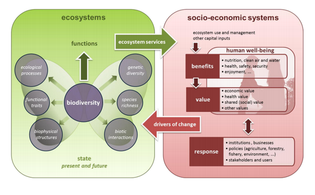

SDI 4 APPS - UPTAKE OF OPEN GEOGRAPHIC INFORMATION THROUGH INNOVATIVE SERVICES BASED ON LINKED DATA
Ecosystem Services (ESS) represent the direct and indirect contributions of ecosystems to human well-being.
Action 5 of the EU Biodiversity Strategy to 2020 calls Member States to map and assess the state of ecosystems and their services in their national territory with the assistance of the European Commission.
This pilot application has the main goal to identify possible spatial interpretations of the results from Ecosystem Services Evaluation.